Panoramica del Progetto
Concetti Chiave
- Ricorsione
- Generazione procedurale
- Algoritmi randomizzati
- Libreria grafica Turtle di Python
- Misurazione delle prestazioni
Motivazione
Questo progetto è nato mentre studiavo la ricorsione e le tecniche di generazione procedurale in Python.
L'idea iniziale è scaturita da una domanda molto semplice: se insegno a un computer come disegnare un albero ed ogni albero generato è unico, chi dovrebbe essere considerato l'artista: il programmatore o la macchina?
Per esplorare questo concetto, ho sviluppato un algoritmo ricorsivo che genera alberi dall'aspetto organico attraverso angoli di ramificazione casuali, lunghezze delle linee variabili e regole di crescita probabilistiche.
Implementazione
Il processo ricorsivo viene controllato riducendo progressivamente la lunghezza dei rami. Quando i rami diventano sufficientemente corti, l'algoritmo passa alla generazione delle foglie, garantendo così la terminazione della funzione.
L'implementazione dà priorità alla complessità visiva rispetto alla velocità di esecuzione ed è stata sviluppata principalmente come esercizio sulla ricorsione e sulla generazione procedurale.
Risultati e Osservazioni
Come si può notare dagli esempi qui sotto, alcuni alberi appaiono più naturali di altri, indipendentemente dal tempo richiesto per generarli. Durante i test, ho riscontrato una scarsa correlazione tra il tempo di esecuzione e la qualità visiva dell'albero finale.
Possibili Sviluppi Futuri
A causa dell'evidente mancanza di correlazione tra tempo di esecuzione e resa visiva, un possibile sviluppo futuro potrebbe essere l'introduzione di un limite di tempo massimo di 200 secondi, per evitare tempi di generazione eccessivamente lunghi.
Example Outputs
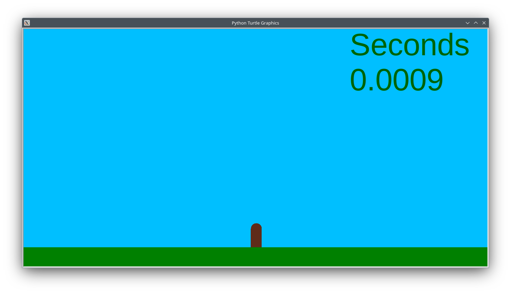
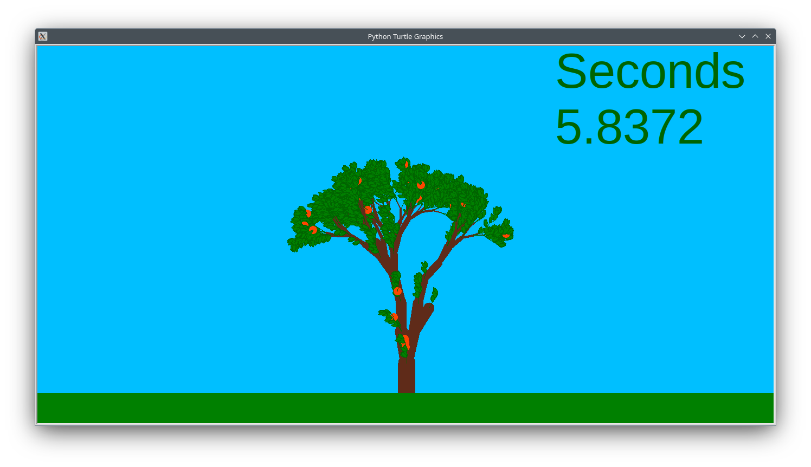
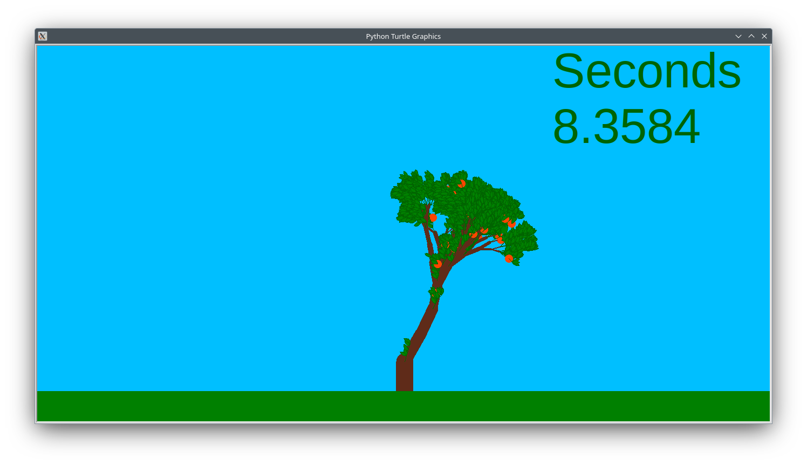
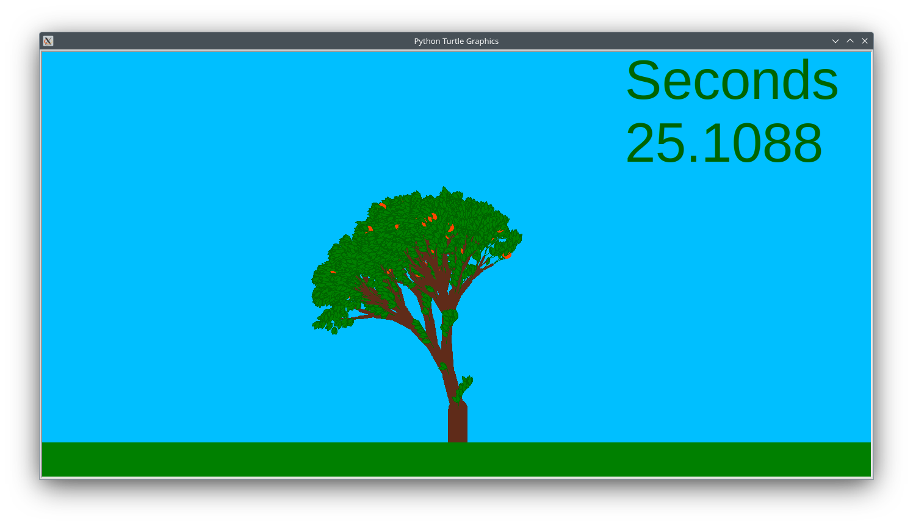
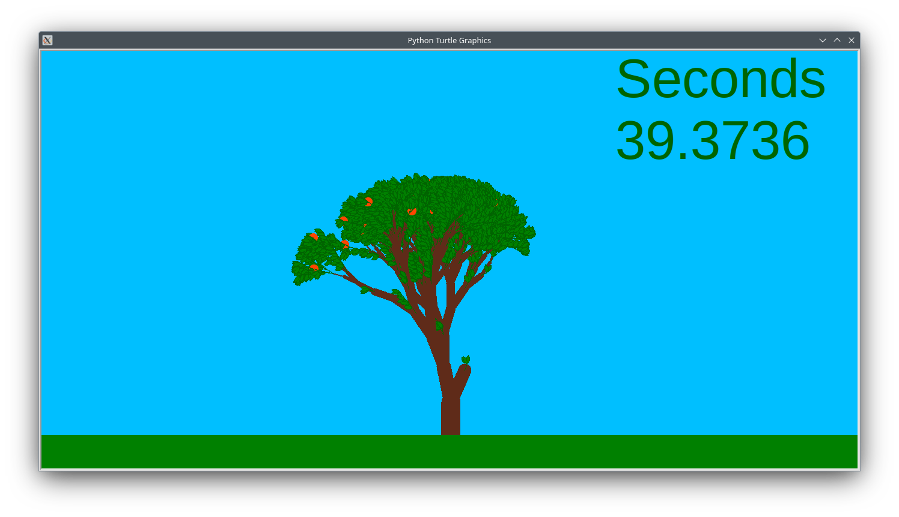
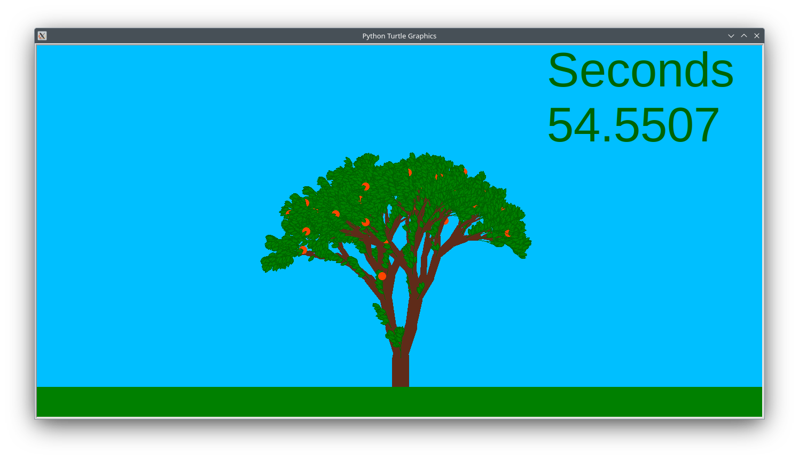
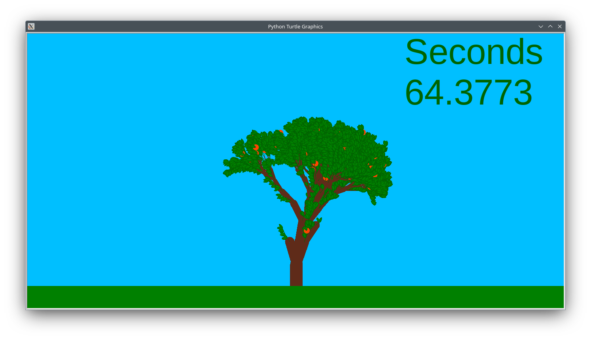
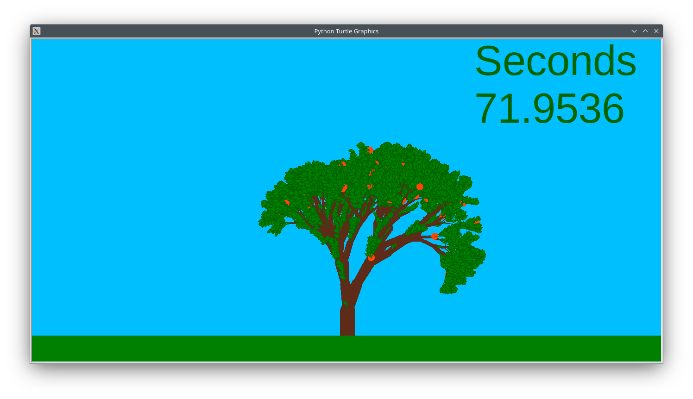
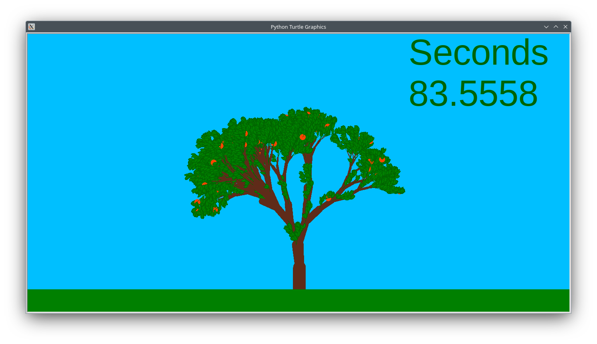
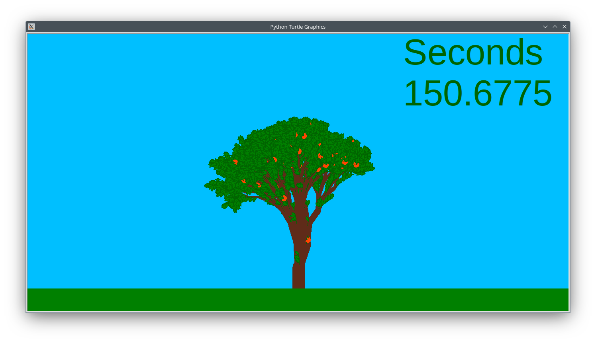
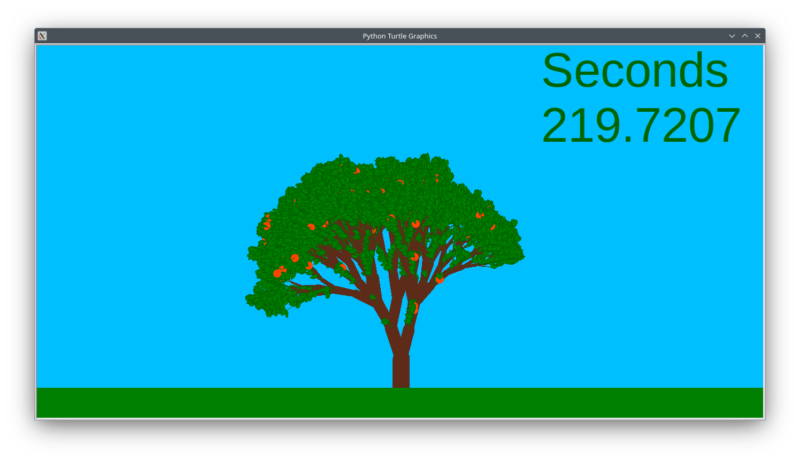
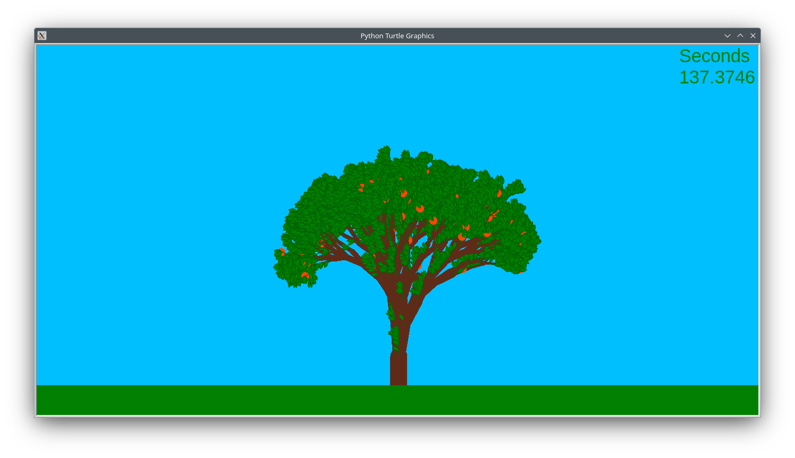
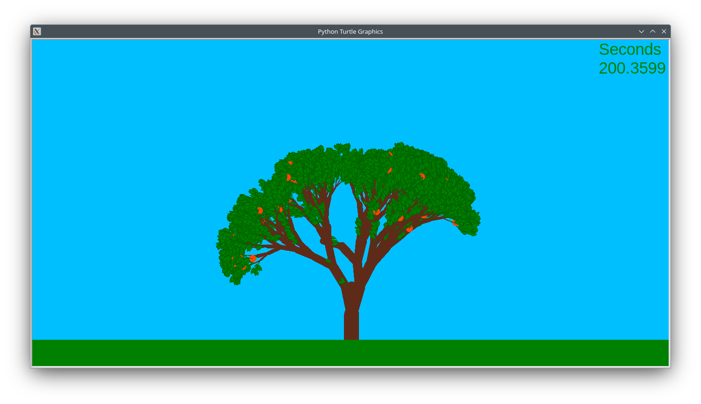
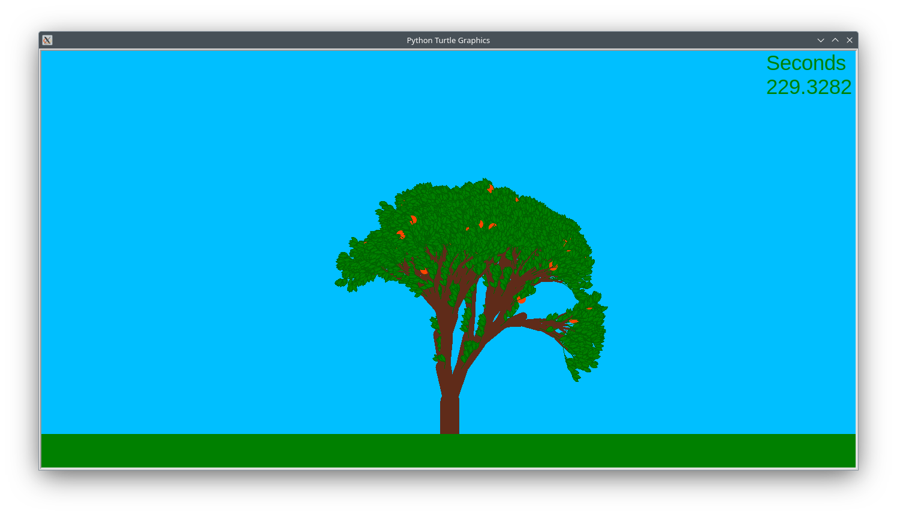